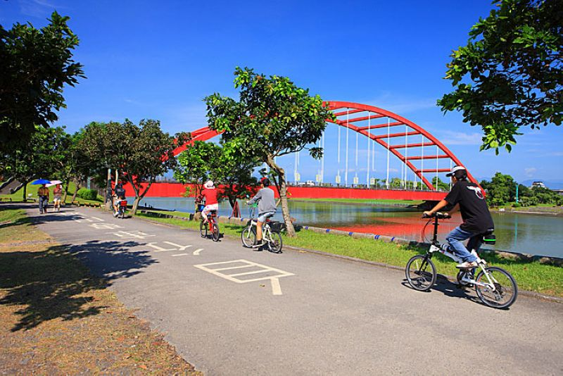
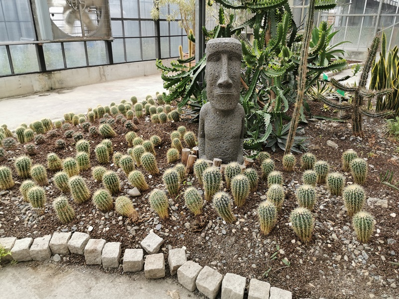

龍潭舊名大埤，俗稱「大陂湖」，為昔日「蘭陽十二勝」之一，亦是蘭陽五大名湖中面積最大的湖泊。
龍潭舊名大埤，俗稱「大陂湖」，為昔日「蘭陽十二勝」之一，亦是蘭陽五大名湖中面積最大的湖泊。
位於礁溪鄉龍潭村，距離宜蘭市區約6公里，交通便利。

此湖三面環山，面積約17公頃，湖面遼闊。水深4.5丈，是宜蘭五大名湖中面積最大者。而這個湖最大的特色就是理頭有的一個小朋友們都超級熱愛的大碗公溜滑梯。

除了泡湯之外，溫泉魚泡腳也是不錯的體驗，來大樹下溫泉魚泡腳，不僅能體驗溫泉魚吃腳，還能一邊品嚐好喝的咖啡及吃三星蔥油餅，另類的泡溫泉魚下午茶。
五峰旗瀑布位於宜蘭縣礁溪鄉五峰旗風景區內，五峰旗瀑布分三層全長約有100公尺，第一層瀑布長約20公尺隱身在小山谷樹叢後，順流而下亦有數處潭水可供遊客嬉戲，第二層瀑布長約30公尺，也是大家所熟知的瀑布，泉水由山腰直瀉而下，在崖角設有觀瀑亭可眺望層巒疊翠，搭配著鳥聲蟲鳴交織而成的大自然樂章，也是最佳的觀瀑地點；第三層瀑布長約50公尺，泉水自山中如萬馬奔騰般傾洩而下，水花四濺激起更多比SPA水療室更多的水氣可戲水或悠游於潭中，享受酷暑裡的清涼。
五峰旗風景區是陽八景之一，五峰旗風景區內有五座尖峰排列，酷似五面三角旗豎於此，故得名為『五峰旗』。

風景區內除了五峰旗瀑布、五峰幽谷以外，還有天主教五峰旗聖母朝聖地也是宜蘭縣著名的風景區
五峰旗風景區內規劃有廣大的停車場、噴水池、小公園、涼亭、石桌椅、石階步道、露營場地等設施，在入口處更規劃有兒童戲水區，清澈涼洌的水質，每逢例假日皆會吸引大朋友小朋友到此戲水，是全家人的休閒勝地。
「親近水，擁有綠」是當時規劃親水公園的主題，為了充分利用冬山河的水域特性，將它打造成一個開放空間，進而達成集結觀光、休閒、遊玩的地方。
冬山河親水公園位於宜蘭縣五結鄉，園內規劃有生態保育區、親水活動區、休閒活動區、水上巴士、露天野外劇場等區域，是宜蘭設備最完善的戶外親水公園，其中以親水遊憩區、冬山河川之旅最吸引人，遊客甚至可從親水公園搭船，沿著冬山河來到傳統藝術中心。
而冬山河親水公園時常舉辦揚名國際的大型活動，最為著名的是可以讓大小朋友玩瘋的國際童玩節等，更是吸引大批人潮前往遊玩，享受炎炎夏日裡的一絲清涼。

除了玩水以外，冬山河畔旁的自行車道是不錯的休閒活動，沿途車道平坦，還可看見紅色的利澤簡橋，兩旁的綠樹成蔭，欣賞冬山河畔迷人的風景。

本店在宜蘭員山，有超好拍的彩虹天空步道，新店在礁溪的青綠小山下打造美麗粉紅城堡。位置在宜5線旁，因離市區有段路，開車比較方便，車程不算遠，約10分鐘左右即可輕鬆抵達，若想搭公車，可從礁溪火車站搭綠11班次，坐到李寶興圳站下車再步行前往，但班次不多。
餐廳內規劃了停車場，但數量有限，若超過就只能停附近的白線區域。為了讓每位客人都能好好用餐，開心拍照，兔子迷宮礁溪浴場採預約制，要提前網路預約訂位，每天分4個場次，一次場次為80人(10:30–12:30, 13:00–15:00, 15:30–17:30, 18:00–20:00)，最早預約時間為訂位日15天前，最晚需1日前預約，每場次請在預約時間20分鐘內報到，入內需先購買門票，成人350元，國小孩童250元，學齡前為50元清潔費，成人與國小孩童票皆可以折抵園區內餐點費用。
如果想要來這邊拍攝網美照以及看著窗邊的風景享受著咖啡甜點的話，可以來這邊來參訪~


入園免門票附停車場，園區佔地寬敞，來訪能欣賞蘭花、仙人掌和水生植物，漫遊自然生態園區，也可以認識蘭花的小知識。
館內造景豐富，還能玩拍異國風車和摩艾石像，來訪能用餐下午茶
也可以體驗植物手作DIY，另外~金車礁溪蘭花園還特別規畫親子遊戲室，讓大朋友小朋友，能同遊玩樂增進情感

除此之外，你可以在這邊購買他們金車所做的各項食品及周邊商品帶回去當名產紀念。

這裡整體上便是個適合假期打發時間的好地方。
宜蘭縣冬山鄉珍珠社區自民國88年4月開始積極進行社區總體營造之前只不過是一個既無突出景觀，亦無珍貴特產的平凡農村。
三年來由於理事長突出的專業能力加上行政能力的強力領導，大膽聘用專職社工員，全力爭取政府補助，充分掌握社區脈動，全方位展開社區總體營造工作，終能藉稻草工藝品與竹圍民宿將「產業文化化，文化產業化」的理念加以實現，將一個平凡農村，營造成一個璀燦亮麗的新風貌農村。
下面為當地居民所弄的稻草做出來的竹掃把及稻草娃娃等物品...

雖然珍珠社區在缺乏雄厚的自然景觀及農業生產資源的條件下，經過刻意經營已營造出吸引遊客的魅力，但社區意識的喚醒工作卻尚未全部完成，後續的有效經營，惟有賴社區居民的組織、參與及共識的凝聚。

國立傳統藝術中心位於宜蘭縣冬山河風景區內，創立於91年1月16日，中心佔地總面積約24公頃，國立傳統藝術中心規劃包含停車場區、行政中心區、住宿區、演藝廳區、工藝坊區、產業景觀區等各具特色的區域。
2016年由全聯善美的文化藝術基金會接手經營後重新整建，新增了迷霧森林、魚耀隧道等裝置，並期許讓傳藝中心成為本土藝術家與傳統技藝人才的展現空間。

國立傳統藝術中心的建築由簡學義、陳森藤、蔡元良、黃聲遠等多位建築師合作，把台灣傳統建築表現得十分精美，也讓國立傳統藝術中心園區榮獲『2001台灣建築佳作獎』，從戲劇館、曲藝館、圖書館、工藝傳習所、民俗街坊、住宿中心至文昌祠、戲台、黃舉人宅等等，都非常有味道，值得細細觀賞。
園區的動態展示以市街聚落區以及水岸的露天舞台、田園景觀區等之技藝展演活動為主，靜態展示則以「展示館」的傳統工藝美術與「戲劇館文物陳列室」的音樂戲曲相關文物之展示為核心
街坊中，還有數十家的工藝店家林立，像是古早電影院、木屐館、戲偶館、陶藝館、玻璃館等，也是遊客最愛停留的地方。
雙連埤擁有如山水畫般優美風光，位於宜蘭縣員山鄉的湖西村，是群山環抱的盆地。
雙連埤擁有如山水畫般優美風光，位於宜蘭縣員山鄉的湖西村，是群山環抱的盆地。
現今的地主喜好美景於十多年前買下，為保有此地原貌，避免湖面因泥沙堆積而陸化，每兩三年便為雙連埤疏濬，才得以享有如此湖光山色的美景。地主於湖中放養十隻雁鴨、五隻白鵝及綠頭鴨．或許是天然美景的召換，還自外飛來一隻雁鴨久留此地，於雙連埤漫步間或聽其呼叫聲，或見其悠遊湖中，皆是一大享受。
雨中雙連溪因四周充滿霧氣，使其更具一份虛無縹緲的朦朧美，雨後則空氣清新、山巒翠綠，宛如人間仙境。碎石路的環湖小徑，適合緩步慢行，欣賞恬靜的田野風光。
 333桃園市龜山區德明路5號
333桃園市龜山區德明路5號 TEL:(03)1234-5678
TEL:(03)1234-5678 EMAIL:123456789@gmail.com
EMAIL:123456789@gmail.com